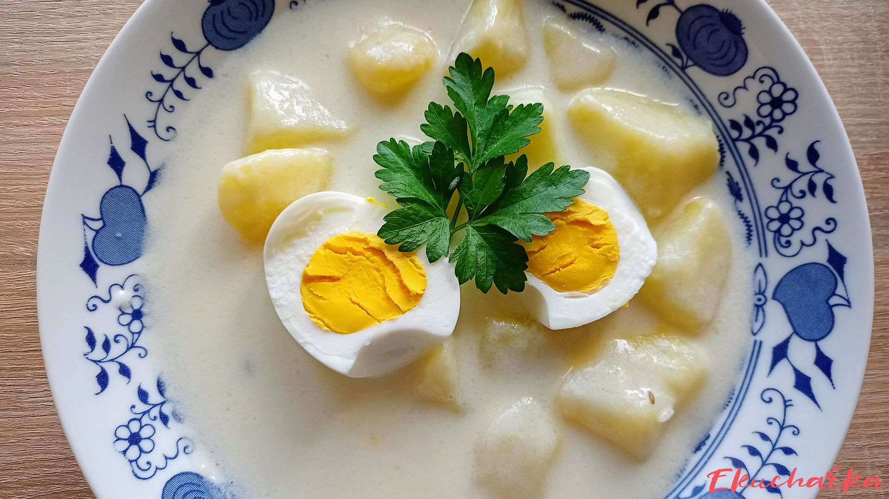

Jednoduchá bramborová polévka na kyselo z mléka a mouky, dochucená cukrem a octem.
Očištěné brambory nakrájíme na kostičky a vaříme je v osolené vodě spolu s bobkovým listem a celým černým pepřem.
Když jsou brambory měkké, zalijeme je zátrepkou z mléka a mouky a necháme přejít varem.
Hotovou polévku dochutíme cukrem a octem podle chuti.